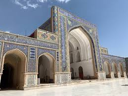
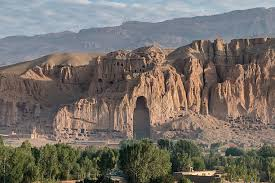
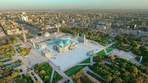

Afghanistan is a country with a rich and diverse cultural heritage shaped by thousands of years of history. From ancient civilizations to Islamic architecture, its cities reflect a deep connection between tradition and identity. Each region of Afghanistan offers unique customs, historical landmarks, and artistic expressions that tell stories of resilience and cultural pride. Despite many challenges, Afghan culture continues to thrive through its people, traditions, and historic cities that remain symbols of strength and heritage.
City Gallery
Kabul

The capital of Afghanistan with rich cultural heritage.
Herat
Known for poetry, art, and architecture.
Bamyan
Bamyan is famous for the ancient Buddha statues and the natural beauty of Band-e Amir.
Balkh
Balkh is one of the oldest cities in Afghanistan, known as the “Mother of Cities.”
City of the Day
Ghazni
- Famous for the Minarets of Ghazni
- Rich Islamic history and architecture
- Important cultural center in Afghan history